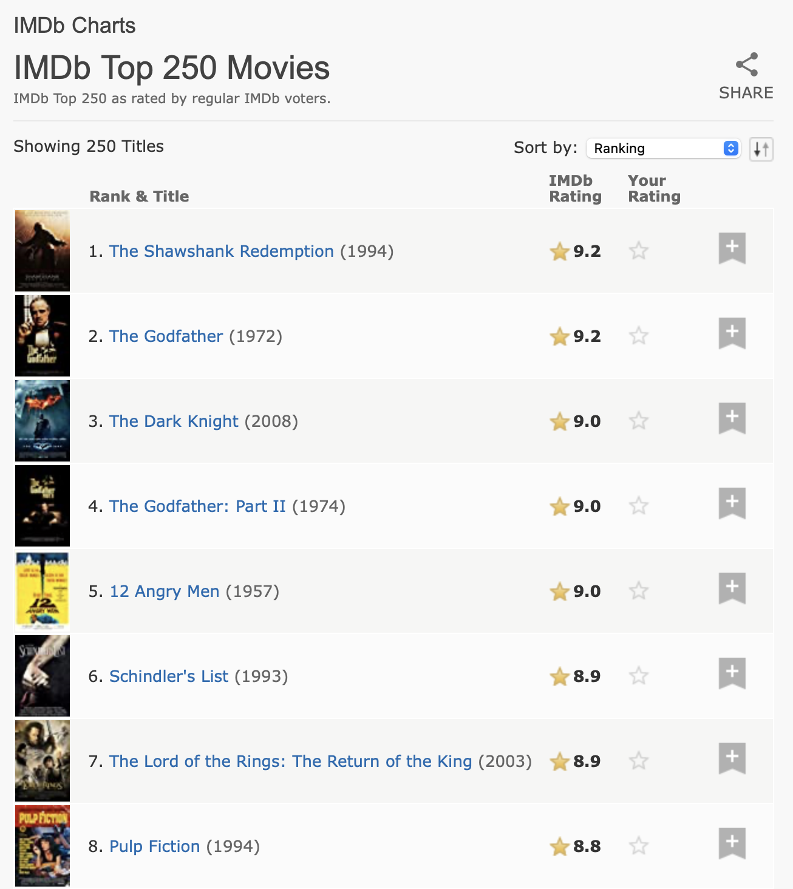

library(tidyverse)
library(rvest)Web scraping
Introduction
This chapter introduces you to the basics of web scraping with rvest. Web scraping is a very useful tool for extracting data from web pages. Some websites will offer an API, a set of structured HTTP requests that return data as JSON, which you handle using the techniques from ?@sec-rectangling. Where possible, you should use the API1, because typically it will give you more reliable data. Unfortunately, however, programming with web APIs is out of scope for this book. Instead, we are teaching scraping, a technique that works whether or not a site provides an API.
In this chapter, we’ll first discuss the ethics and legalities of scraping before we dive into the basics of HTML. You’ll then learn the basics of CSS selectors to locate specific elements on the page, and how to use rvest functions to get data from text and attributes out of HTML and into R. We’ll then discuss some techniques to figure out what CSS selector you need for the page you’re scraping, before finishing up with a couple of case studies, and a brief discussion of dynamic websites.
Prerequisites
In this chapter, we’ll focus on tools provided by rvest. rvest is a member of the tidyverse, but is not a core member so you’ll need to load it explicitly. We’ll also load the full tidyverse since we’ll find it generally useful working with the data we’ve scraped.
Scraping ethics and legalities
Before we get started discussing the code you’ll need to perform web scraping, we need to talk about whether it’s legal and ethical for you to do so. Overall, the situation is complicated with regards to both of these.
Legalities depend a lot on where you live. However, as a general principle, if the data is public, non-personal, and factual, you’re likely to be ok2. These three factors are important because they’re connected to the site’s terms and conditions, personally identifiable information, and copyright, as we’ll discuss below.
If the data isn’t public, non-personal, or factual or you’re scraping the data specifically to make money with it, you’ll need to talk to a lawyer. In any case, you should be respectful of the resources of the server hosting the pages you are scraping. Most importantly, this means that if you’re scraping many pages, you should make sure to wait a little between each request. One easy way to do so is to use the polite package by Dmytro Perepolkin. It will automatically pause between requests and cache the results so you never ask for the same page twice.
Terms of service
If you look closely, you’ll find many websites include a “terms and conditions” or “terms of service” link somewhere on the page, and if you read that page closely you’ll often discover that the site specifically prohibits web scraping. These pages tend to be a legal land grab where companies make very broad claims. It’s polite to respect these terms of service where possible, but take any claims with a grain of salt.
US courts have generally found that simply putting the terms of service in the footer of the website isn’t sufficient for you to be bound by them, e.g., HiQ Labs v. LinkedIn. Generally, to be bound to the terms of service, you must have taken some explicit action like creating an account or checking a box. This is why whether or not the data is public is important; if you don’t need an account to access them, it is unlikely that you are bound to the terms of service. Note, however, the situation is rather different in Europe where courts have found that terms of service are enforceable even if you don’t explicitly agree to them.
Personally identifiable information
Even if the data is public, you should be extremely careful about scraping personally identifiable information like names, email addresses, phone numbers, dates of birth, etc. Europe has particularly strict laws about the collection or storage of such data (GDPR), and regardless of where you live you’re likely to be entering an ethical quagmire. For example, in 2016, a group of researchers scraped public profile information (e.g., usernames, age, gender, location, etc.) about 70,000 people on the dating site OkCupid and they publicly released these data without any attempts for anonymization. While the researchers felt that there was nothing wrong with this since the data were already public, this work was widely condemned due to ethics concerns around identifiability of users whose information was released in the dataset. If your work involves scraping personally identifiable information, we strongly recommend reading about the OkCupid study3 as well as similar studies with questionable research ethics involving the acquisition and release of personally identifiable information.
Copyright
Finally, you also need to worry about copyright law. Copyright law is complicated, but it’s worth taking a look at the US law which describes exactly what’s protected: “[…] original works of authorship fixed in any tangible medium of expression, […]”. It then goes on to describe specific categories that it applies like literary works, musical works, motion pictures and more. Notably absent from copyright protection are data. This means that as long as you limit your scraping to facts, copyright protection does not apply. (But note that Europe has a separate “sui generis” right that protects databases.)
As a brief example, in the US, lists of ingredients and instructions are not copyrightable, so copyright can not be used to protect a recipe. But if that list of recipes is accompanied by substantial novel literary content, that is copyrightable. This is why when you’re looking for a recipe on the internet there’s always so much content beforehand.
If you do need to scrape original content (like text or images), you may still be protected under the doctrine of fair use. Fair use is not a hard and fast rule, but weighs up a number of factors. It’s more likely to apply if you are collecting the data for research or non-commercial purposes and if you limit what you scrape to just what you need.
HTML basics
To scrape webpages, you need to first understand a little bit about HTML, the language that describes web pages. HTML stands for HyperText Markup Language and looks something like this:
<html>
<head>
<title>Page title</title>
</head>
<body>
<h1 id='first'>A heading</h1>
<p>Some text & <b>some bold text.</b></p>
<img src='myimg.png' width='100' height='100'>
</body>HTML has a hierarchical structure formed by elements which consist of a start tag (e.g., <tag>), optional attributes (id='first'), an end tag4 (like </tag>), and contents (everything in between the start and end tag).
Since < and > are used for start and end tags, you can’t write them directly. Instead you have to use the HTML escapes > (greater than) and < (less than). And since those escapes use &, if you want a literal ampersand you have to escape it as &. There are a wide range of possible HTML escapes but you don’t need to worry about them too much because rvest automatically handles them for you.
Web scraping is possible because most pages that contain data that you want to scrape generally have a consistent structure.
Elements
There are over 100 HTML elements. Some of the most important are:
Every HTML page must be in an
<html>element, and it must have two children:<head>, which contains document metadata like the page title, and<body>, which contains the content you see in the browser.Block tags like
<h1>(heading 1),<section>(section),<p>(paragraph), and<ol>(ordered list) form the overall structure of the page.Inline tags like
<b>(bold),<i>(italics), and<a>(link) format text inside block tags.
If you encounter a tag that you’ve never seen before, you can find out what it does with a little googling. Another good place to start are the MDN Web Docs which describe just about every aspect of web programming.
Most elements can have content in between their start and end tags. This content can either be text or more elements. For example, the following HTML contains paragraph of text, with one word in bold.
<p>
Hi! My <b>name</b> is Hadley.
</p>The children are the elements it contains, so the <p> element above has one child, the <b> element. The <b> element has no children, but it does have contents (the text “name”).
Attributes
Tags can have named attributes which look like name1='value1' name2='value2'. Two of the most important attributes are id and class, which are used in conjunction with CSS (Cascading Style Sheets) to control the visual appearance of the page. These are often useful when scraping data off a page. Attributes are also used to record the destination of links (the href attribute of <a> elements) and the source of images (the src attribute of the <img> element).
Extracting data
To get started scraping, you’ll need the URL of the page you want to scrape, which you can usually copy from your web browser. You’ll then need to read the HTML for that page into R with read_html(). This returns an xml_document5 object which you’ll then manipulate using rvest functions:
html <- read_html("http://rvest.tidyverse.org/")
html
#> {html_document}
#> <html lang="en">
#> [1] <head>\n<meta http-equiv="Content-Type" content="text/html; charset=UT ...
#> [2] <body>\n <a href="#container" class="visually-hidden-focusable">Ski ...rvest also includes a function that lets you write HTML inline. We’ll use this a bunch in this chapter as we teach how the various rvest functions work with simple examples.
html <- minimal_html("
<p>This is a paragraph</p>
<ul>
<li>This is a bulleted list</li>
</ul>
")
html
#> {html_document}
#> <html>
#> [1] <head>\n<meta http-equiv="Content-Type" content="text/html; charset=UT ...
#> [2] <body>\n<p>This is a paragraph</p>\n <ul>\n<li>This is a bulleted lis ...Now that you have the HTML in R, it’s time to extract the data of interest. You’ll first learn about the CSS selectors that allow you to identify the elements of interest and the rvest functions that you can use to extract data from them. Then we’ll briefly cover HTML tables, which have some special tools.
Find elements
CSS is short for cascading style sheets, and is a tool for defining the visual styling of HTML documents. CSS includes a miniature language for selecting elements on a page called CSS selectors. CSS selectors define patterns for locating HTML elements, and are useful for scraping because they provide a concise way of describing which elements you want to extract.
We’ll come back to CSS selectors in more detail in Section 1.5, but luckily you can get a long way with just three:
pselects all<p>elements..titleselects all elements withclass“title”.#titleselects the element with theidattribute that equals “title”. Id attributes must be unique within a document, so this will only ever select a single element.
Let’s try out these selectors with a simple example:
html <- minimal_html("
<h1>This is a heading</h1>
<p id='first'>This is a paragraph</p>
<p class='important'>This is an important paragraph</p>
")Use html_elements() to find all elements that match the selector:
html |> html_elements("p")
#> {xml_nodeset (2)}
#> [1] <p id="first">This is a paragraph</p>
#> [2] <p class="important">This is an important paragraph</p>
html |> html_elements(".important")
#> {xml_nodeset (1)}
#> [1] <p class="important">This is an important paragraph</p>
html |> html_elements("#first")
#> {xml_nodeset (1)}
#> [1] <p id="first">This is a paragraph</p>Another important function is html_element() which always returns the same number of outputs as inputs. If you apply it to a whole document it’ll give you the first match:
html |> html_element("p")
#> {html_node}
#> <p id="first">There’s an important difference between html_element() and html_elements() when you use a selector that doesn’t match any elements. html_elements() returns a vector of length 0, where html_element() returns a missing value. This will be important shortly.
html |> html_elements("b")
#> {xml_nodeset (0)}
html |> html_element("b")
#> {xml_missing}
#> <NA>Nesting selections
In most cases, you’ll use html_elements() and html_element() together, typically using html_elements() to identify elements that will become observations then using html_element() to find elements that will become variables. Let’s see this in action using a simple example. Here we have an unordered list (<ul>) where each list item (<li>) contains some information about four characters from StarWars:
html <- minimal_html("
<ul>
<li><b>C-3PO</b> is a <i>droid</i> that weighs <span class='weight'>167 kg</span></li>
<li><b>R4-P17</b> is a <i>droid</i></li>
<li><b>R2-D2</b> is a <i>droid</i> that weighs <span class='weight'>96 kg</span></li>
<li><b>Yoda</b> weighs <span class='weight'>66 kg</span></li>
</ul>
")We can use html_elements() to make a vector where each element corresponds to a different character:
characters <- html |> html_elements("li")
characters
#> {xml_nodeset (4)}
#> [1] <li>\n<b>C-3PO</b> is a <i>droid</i> that weighs <span class="weight"> ...
#> [2] <li>\n<b>R4-P17</b> is a <i>droid</i>\n</li>
#> [3] <li>\n<b>R2-D2</b> is a <i>droid</i> that weighs <span class="weight"> ...
#> [4] <li>\n<b>Yoda</b> weighs <span class="weight">66 kg</span>\n</li>To extract the name of each character, we use html_element(), because when applied to the output of html_elements() it’s guaranteed to return one response per element:
characters |> html_element("b")
#> {xml_nodeset (4)}
#> [1] <b>C-3PO</b>
#> [2] <b>R4-P17</b>
#> [3] <b>R2-D2</b>
#> [4] <b>Yoda</b>The distinction between html_element() and html_elements() isn’t important for name, but it is important for weight. We want to get one weight for each character, even if there’s no weight <span>. That’s what html_element() does:
characters |> html_element(".weight")
#> {xml_nodeset (4)}
#> [1] <span class="weight">167 kg</span>
#> [2] NA
#> [3] <span class="weight">96 kg</span>
#> [4] <span class="weight">66 kg</span>html_elements() finds all weight <span>s that are children of characters. There’s only three of these, so we lose the connection between names and weights:
characters |> html_elements(".weight")
#> {xml_nodeset (3)}
#> [1] <span class="weight">167 kg</span>
#> [2] <span class="weight">96 kg</span>
#> [3] <span class="weight">66 kg</span>Now that you’ve selected the elements of interest, you’ll need to extract the data, either from the text contents or some attributes.
Text and attributes
html_text2()6 extracts the plain text contents of an HTML element:
characters |>
html_element("b") |>
html_text2()
#> [1] "C-3PO" "R4-P17" "R2-D2" "Yoda"
characters |>
html_element(".weight") |>
html_text2()
#> [1] "167 kg" NA "96 kg" "66 kg"Note that any escapes will be automatically handled; you’ll only ever see HTML escapes in the source HTML, not in the data returned by rvest.
html_attr() extracts data from attributes:
html <- minimal_html("
<p><a href='https://en.wikipedia.org/wiki/Cat'>cats</a></p>
<p><a href='https://en.wikipedia.org/wiki/Dog'>dogs</a></p>
")
html |>
html_elements("p") |>
html_element("a") |>
html_attr("href")
#> [1] "https://en.wikipedia.org/wiki/Cat" "https://en.wikipedia.org/wiki/Dog"html_attr() always returns a string, so if you’re extracting numbers or dates, you’ll need to do some post-processing.
Tables
If you’re lucky, your data will be already stored in an HTML table, and it’ll be a matter of just reading it from that table. It’s usually straightforward to recognize a table in your browser: it’ll have a rectangular structure of rows and columns, and you can copy and paste it into a tool like Excel.
HTML tables are built up from four main elements: <table>, <tr> (table row), <th> (table heading), and <td> (table data). Here’s a simple HTML table with two columns and three rows:
html <- minimal_html("
<table class='mytable'>
<tr><th>x</th> <th>y</th></tr>
<tr><td>1.5</td> <td>2.7</td></tr>
<tr><td>4.9</td> <td>1.3</td></tr>
<tr><td>7.2</td> <td>8.1</td></tr>
</table>
")rvest provides a function that knows how to read this sort of data: html_table(). It returns a list containing one tibble for each table found on the page. Use html_element() to identify the table you want to extract:
html |>
html_element(".mytable") |>
html_table()
#> # A tibble: 3 × 2
#> x y
#> <dbl> <dbl>
#> 1 1.5 2.7
#> 2 4.9 1.3
#> 3 7.2 8.1Note that x and y have automatically been converted to numbers. This automatic conversion doesn’t always work, so in more complex scenarios you may want to turn it off with convert = FALSE and then do your own conversion.
Finding the right selectors
Figuring out the selector you need for your data is typically the hardest part of the problem. You’ll often need to do some experimenting to find a selector that is both specific (i.e. it doesn’t select things you don’t care about) and sensitive (i.e. it does select everything you care about). Lots of trial and error is a normal part of the process! There are two main tools that are available to help you with this process: SelectorGadget and your browser’s developer tools.
SelectorGadget is a javascript bookmarklet that automatically generates CSS selectors based on the positive and negative examples that you provide. It doesn’t always work, but when it does, it’s magic! You can learn how to install and use SelectorGadget either by reading https://rvest.tidyverse.org/articles/selectorgadget.html or watching Mine’s video at https://www.youtube.com/watch?v=PetWV5g1Xsc.
Every modern browser comes with some toolkit for developers, but we recommend Chrome, even if it isn’t your regular browser: its web developer tools are some of the best and they’re immediately available. Right click on an element on the page and click Inspect. This will open an expandable view of the complete HTML page, centered on the element that you just clicked. You can use this to explore the page and get a sense of what selectors might work. Pay particular attention to the class and id attributes, since these are often used to form the visual structure of the page, and hence make for good tools to extract the data that you’re looking for.
Inside the Elements view, you can also right click on an element and choose Copy as Selector to generate a selector that will uniquely identify the element of interest.
If either SelectorGadget or Chrome DevTools have generated a CSS selector that you don’t understand, try Selectors Explained which translates CSS selectors into plain English. If you find yourself doing this a lot, you might want to learn more about CSS selectors generally. We recommend starting with the fun CSS dinner tutorial and then referring to the MDN web docs.
Putting it all together
Let’s put this all together to scrape some websites. There’s some risk that these examples may no longer work when you run them — that’s the fundamental challenge of web scraping; if the structure of the site changes, then you’ll have to change your scraping code.
StarWars
rvest includes a very simple example in vignette("starwars"). This is a simple page with minimal HTML so it’s a good place to start. I’d encourage you to navigate to that page now and use “Inspect Element” to inspect one of the headings that’s the title of a Star Wars movie. Use the keyboard or mouse to explore the hierarchy of the HTML and see if you can get a sense of the shared structure used by each movie.
You should be able to see that each movie has a shared structure that looks like this:
<section>
<h2 data-id="1">The Phantom Menace</h2>
<p>Released: 1999-05-19</p>
<p>Director: <span class="director">George Lucas</span></p>
<div class="crawl">
<p>...</p>
<p>...</p>
<p>...</p>
</div>
</section>Our goal is to turn this data into a 7 row data frame with variables title, year, director, and intro. We’ll start by reading the HTML and extracting all the <section> elements:
url <- "https://rvest.tidyverse.org/articles/starwars.html"
html <- read_html(url)
section <- html |> html_elements("section")
section
#> {xml_nodeset (7)}
#> [1] <section><h2 data-id="1">\nThe Phantom Menace\n</h2>\n<p>\nReleased: 1 ...
#> [2] <section><h2 data-id="2">\nAttack of the Clones\n</h2>\n<p>\nReleased: ...
#> [3] <section><h2 data-id="3">\nRevenge of the Sith\n</h2>\n<p>\nReleased: ...
#> [4] <section><h2 data-id="4">\nA New Hope\n</h2>\n<p>\nReleased: 1977-05-2 ...
#> [5] <section><h2 data-id="5">\nThe Empire Strikes Back\n</h2>\n<p>\nReleas ...
#> [6] <section><h2 data-id="6">\nReturn of the Jedi\n</h2>\n<p>\nReleased: 1 ...
#> [7] <section><h2 data-id="7">\nThe Force Awakens\n</h2>\n<p>\nReleased: 20 ...This retrieves seven elements matching the seven movies found on that page, suggesting that using section as a selector is good. Extracting the individual elements is straightforward since the data is always found in the text. It’s just a matter of finding the right selector:
section |> html_element("h2") |> html_text2()
#> [1] "The Phantom Menace" "Attack of the Clones"
#> [3] "Revenge of the Sith" "A New Hope"
#> [5] "The Empire Strikes Back" "Return of the Jedi"
#> [7] "The Force Awakens"
section |> html_element(".director") |> html_text2()
#> [1] "George Lucas" "George Lucas" "George Lucas"
#> [4] "George Lucas" "Irvin Kershner" "Richard Marquand"
#> [7] "J. J. Abrams"Once we’ve done that for each component, we can wrap all the results up into a tibble:
tibble(
title = section |>
html_element("h2") |>
html_text2(),
released = section |>
html_element("p") |>
html_text2() |>
str_remove("Released: ") |>
parse_date(),
director = section |>
html_element(".director") |>
html_text2(),
intro = section |>
html_element(".crawl") |>
html_text2()
)
#> # A tibble: 7 × 4
#> title released director intro
#> <chr> <date> <chr> <chr>
#> 1 The Phantom Menace 1999-05-19 George Lucas "Turmoil has engulfed …
#> 2 Attack of the Clones 2002-05-16 George Lucas "There is unrest in th…
#> 3 Revenge of the Sith 2005-05-19 George Lucas "War! The Republic is …
#> 4 A New Hope 1977-05-25 George Lucas "It is a period of civ…
#> 5 The Empire Strikes Back 1980-05-17 Irvin Kershner "It is a dark time for…
#> 6 Return of the Jedi 1983-05-25 Richard Marquand "Luke Skywalker has re…
#> # ℹ 1 more rowWe did a little more processing of released to get a variable that will be easy to use later in our analysis.
IMDB top films
For our next task we’ll tackle something a little trickier, extracting the top 250 movies from the internet movie database (IMDb). At the time we wrote this chapter, the page looked like Figure 1.

This data has a clear tabular structure so it’s worth starting with html_table():
url <- "https://web.archive.org/web/20220201012049/https://www.imdb.com/chart/top/"
html <- read_html(url)
table <- html |>
html_element("table") |>
html_table()
table
#> # A tibble: 250 × 5
#> `` `Rank & Title` `IMDb Rating` `Your Rating` ``
#> <lgl> <chr> <dbl> <chr> <lgl>
#> 1 NA "1.\n The Shawshank Redempt… 9.2 "12345678910\n… NA
#> 2 NA "2.\n The Godfather\n … 9.1 "12345678910\n… NA
#> 3 NA "3.\n The Godfather: Part I… 9 "12345678910\n… NA
#> 4 NA "4.\n The Dark Knight\n … 9 "12345678910\n… NA
#> 5 NA "5.\n 12 Angry Men\n … 8.9 "12345678910\n… NA
#> 6 NA "6.\n Schindler's List\n … 8.9 "12345678910\n… NA
#> # ℹ 244 more rowsThis includes a few empty columns, but overall does a good job of capturing the information from the table. However, we need to do some more processing to make it easier to use. First, we’ll rename the columns to be easier to work with, and remove the extraneous whitespace in rank and title. We will do this with select() (instead of rename()) to do the renaming and selecting of just these two columns in one step. Then we’ll remove the new lines and extra spaces, and then apply separate_wider_regex() (from ?@sec-extract-variables) to pull out the title, year, and rank into their own variables.
ratings <- table |>
select(
rank_title_year = `Rank & Title`,
rating = `IMDb Rating`
) |>
mutate(
rank_title_year = str_replace_all(rank_title_year, "\n +", " ")
) |>
separate_wider_regex(
rank_title_year,
patterns = c(
rank = "\\d+", "\\. ",
title = ".+", " +\\(",
year = "\\d+", "\\)"
)
)
ratings
#> # A tibble: 250 × 4
#> rank title year rating
#> <chr> <chr> <chr> <dbl>
#> 1 1 The Shawshank Redemption 1994 9.2
#> 2 2 The Godfather 1972 9.1
#> 3 3 The Godfather: Part II 1974 9
#> 4 4 The Dark Knight 2008 9
#> 5 5 12 Angry Men 1957 8.9
#> 6 6 Schindler's List 1993 8.9
#> # ℹ 244 more rowsEven in this case where most of the data comes from table cells, it’s still worth looking at the raw HTML. If you do so, you’ll discover that we can add a little extra data by using one of the attributes. This is one of the reasons it’s worth spending a little time spelunking the source of the page; you might find extra data, or might find a parsing route that’s slightly easier.
html |>
html_elements("td strong") |>
head() |>
html_attr("title")
#> [1] "9.2 based on 2,536,415 user ratings"
#> [2] "9.1 based on 1,745,675 user ratings"
#> [3] "9.0 based on 1,211,032 user ratings"
#> [4] "9.0 based on 2,486,931 user ratings"
#> [5] "8.9 based on 749,563 user ratings"
#> [6] "8.9 based on 1,295,705 user ratings"We can combine this with the tabular data and again apply separate_wider_regex() to extract out the bit of data we care about:
ratings |>
mutate(
rating_n = html |> html_elements("td strong") |> html_attr("title")
) |>
separate_wider_regex(
rating_n,
patterns = c(
"[0-9.]+ based on ",
number = "[0-9,]+",
" user ratings"
)
) |>
mutate(
number = parse_number(number)
)
#> # A tibble: 250 × 5
#> rank title year rating number
#> <chr> <chr> <chr> <dbl> <dbl>
#> 1 1 The Shawshank Redemption 1994 9.2 2536415
#> 2 2 The Godfather 1972 9.1 1745675
#> 3 3 The Godfather: Part II 1974 9 1211032
#> 4 4 The Dark Knight 2008 9 2486931
#> 5 5 12 Angry Men 1957 8.9 749563
#> 6 6 Schindler's List 1993 8.9 1295705
#> # ℹ 244 more rowsDynamic sites
So far we have focused on websites where html_elements() returns what you see in the browser and discussed how to parse what it returns and how to organize that information in tidy data frames. From time-to-time, however, you’ll hit a site where html_elements() and friends don’t return anything like what you see in the browser. In many cases, that’s because you’re trying to scrape a website that dynamically generates the content of the page with javascript. This doesn’t currently work with rvest, because rvest downloads the raw HTML and doesn’t run any javascript.
It’s still possible to scrape these types of sites, but rvest needs to use a more expensive process: fully simulating the web browser including running all javascript. This functionality is not available at the time of writing, but it’s something we’re actively working on and might be available by the time you read this. It uses the chromote package which actually runs the Chrome browser in the background, and gives you additional tools to interact with the site, like a human typing text and clicking buttons. Check out the rvest website for more details.
Summary
In this chapter, you’ve learned about the why, the why not, and the how of scraping data from web pages. First, you’ve learned about the basics of HTML and using CSS selectors to refer to specific elements, then you’ve learned about using the rvest package to get data out of HTML into R. We then demonstrated web scraping with two case studies: a simpler scenario on scraping data on StarWars films from the rvest package website and a more complex scenario on scraping the top 250 films from IMDB.
Technical details of scraping data off the web can be complex, particularly when dealing with sites, however legal and ethical considerations can be even more complex. It’s important for you to educate yourself about both of these before setting out to scrape data.
This brings us to the end of the import part of the book where you’ve learned techniques to get data from where it lives (spreadsheets, databases, JSON files, and web sites) into a tidy form in R. Now it’s time to turn our sights to a new topic: making the most of R as a programming language.
And many popular APIs already have CRAN packages that wrap them, so start with a little research first!↩︎
Obviously we’re not lawyers, and this is not legal advice. But this is the best summary we can give having read a bunch about this topic.↩︎
One example of an article on the OkCupid study was published by Wired, https://www.wired.com/2016/05/okcupid-study-reveals-perils-big-data-science.↩︎
A number of tags (including
<p>and<li>)don’t require end tags, but we think it’s best to include them because it makes seeing the structure of the HTML a little easier.↩︎This class comes from the xml2 package. xml2 is a low-level package that rvest builds on top of.↩︎
rvest also provides
html_text()but you should almost always usehtml_text2()since it does a better job of converting nested HTML to text.↩︎